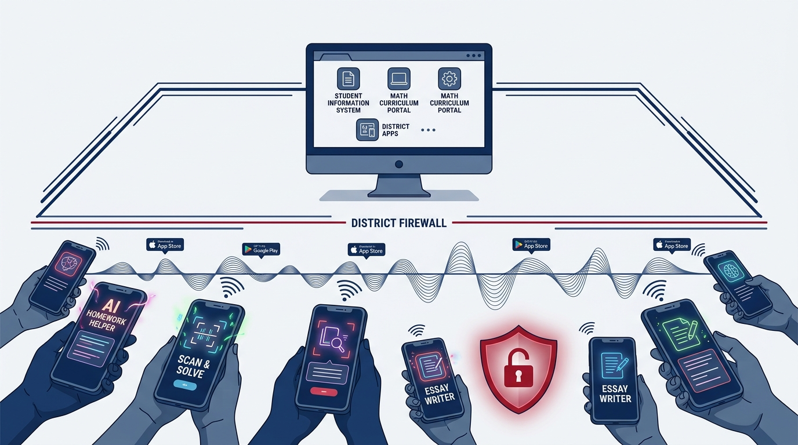

Two-Thirds of App-Store AI Tools Market to Schools, but Fewer Than 3% Protect Student Data
One in five AI tools reachable by K-12 students has no website — only an app-store listing. Almost none of it carries a signal a district would recognize.

AI Homework Helper — Math Scan. Homework Helper: Scan & Solve. Homework Solver: AI Math.
Three different apps. Three different developers. Which one is on a student’s phone in your district right now?
Nobody can answer that from a purchase order, because none of these tools were ever purchased.
What We Found
RaiseMark maintains a library of AI tools reachable by US K-12 students and staff. The research cohort holds 1,455 entries, each one reviewed against the vendor’s own published terms and privacy policy, each one dated.
In 311 of those 1,455 entries — 21.4 percent — the vendor has no website. The only address we could record was an App Store or Google Play listing. For 283 of them, the privacy policy is an app-store page too.
| Evaluation Dimension | App-Store Tools (311) | Everything Else (1,144) |
|---|---|---|
| Mentions FERPA anywhere in its policy | 2.6% | 40.5% |
| Has a student data privacy agreement | 2.3% | 36.2% |
| Rated high shadow-AI risk | 32.5% | 8.1% |
| Presents itself as an education tool | 65.0% | 68.6% |
Read the last row against the first two. Two-thirds of this layer markets itself to schools, and almost none of it carries a single signal a district procurement office would recognize.
The naming tells the same story. Across the library, we catalogued more than a hundred tools whose titles are near-duplicates of one another — homework solvers, scan-and-answer apps, flashcard generators — differentiated by keyword rather than by pedagogy. This is a category of hastily-built tools trying to capture app-store search results, not for student learning.
Why Your Systems Cannot See It
Your district’s inventory is incomplete because of how this layer reaches students.
A district’s AI tools become visible through three events: a purchase order, integration with existing systems, or a network request against a filtered device. The app-store layer produces none of them. It arrives on a personal phone, over cellular data, through an account a student created with a personal email. There is no contract to file, no integration to configure, no domain for the filter to catch. This creates a blind spot for districts, between visible AI usage and shadow AI usage.
The scale of the visibility gap is now measurable from two directions.
From the district side: One large analysis from Instructure, distributor of Canvas LMS, of learning-tool activity across 12.7 million students and educators found districts making an average of 3,001 unique digital tools available — while the typical student and the typical teacher actually launched four (Instructure, 2026). That is what sanctioned use looks like. Concentrated, and countable.
From the student side: National polling conducted through June through August 2025 found 73 percent of high school students using AI on their own — up thirteen points in a single year — and 31 percent holding personal, non-schoolwork conversations with AI on a device the school provided them (Center for Democracy & Technology, 2025).
Those two findings do not contradict each other. They measure different channels. Instructure counts launches inside the learning management system and is structurally blind to everything else. The polling asks students directly, and captures exactly what the learning management system cannot.
Put together, the picture is clear: sanctioned AI use is narrow and visible. Unsanctioned AI use is wide, growing, and invisible to every system a district already owns.
This divergence between sanctioned visibility and classroom reality mirrors the structural disconnect explored in our briefing on The Readiness Mirage: Why Heavy K-12 Classroom AI Use Doesn't Mean Teachers Are Ready, where adoption and student engagement dramatically outpace organizational preparation and institutional policy.
What This Analysis Can and Cannot Tell You
The shadow-AI risk rating in the table above is RaiseMark’s assessment. We assign it, using stated criteria, and a reasonable reviewer could weigh a given tool differently. Take the 32.5 percent figure as our informed judgment, not as a measurement.
However, we analyzed the market, not your district’s specific situation. No market analysis has your network logs, your device management data, your teachers’ observations, or your students’ honest answers. Neither does any vendor dashboard or any filtering report.
Without a 360 Snapshot of the Shadow AI in your district, you cannot know whether your students are using these tools.
This library tells you what exists. It cannot tell you what is running in your buildings. That’s precisely what RaiseMark can do for your district: provide an in-depth view of the AI that your staff and students are using.
The Question Worth Answering
A market analysis can help to understand the ed tech ecosystem, but there are better questions: which programs are in my district, who’s using them, and is it safe to do so?
Answering these takes triangulation: network and device data, a staff and student inventory that people will complete honestly, a review of what each identified tool does with student data, and a scored recommendation for every one of them. That is precisely what RaiseMark’s 360 AI Snapshot — the diagnostic foundation of our AI 360 Review — does.
We can tell you what it typically finds. In a recent engagement with a Kansas district, the Snapshot identified 30 AI tools in active use — 17 of which had never been through any central approval process. The leadership team was not negligent. They were looking at the channels they could see.
A district that reads this and adds a filtering rule has addressed the smallest part of the problem. A district that finds out what it is actually running can decide to retain, right-size, sunset, or discourage based on data, not vibes.
Three Things You Can Do This Month
The first step to closing the gap is gauging how wide the gap actually is.
- Surveying students reveals awareness, but lacks technical verification. Asking students directly can uncover hidden tool usage, but self-reported data is inherently incomplete and cannot assess data privacy risks or shadow network activity.
- Teacher observations spot symptoms, not system-wide scope. Classroom observation is valuable, but staff cannot track background network requests, unapproved web extensions, or off-network device usage.
- Policy audits identify compliance gaps, but don't stop unauthorized tools. Reviewing acceptable use policies clarifies rules, but policy alone cannot detect or govern mobile and personal-device AI applications.
While these initial steps help highlight the scale of the challenge, bridging the visibility gap requires specialized expertise. RaiseMark’s 360 AI Snapshot moves beyond partial DIY measures by triangulating network telemetry, cross-referencing privacy policies, and delivering actionable, scored governance recommendations for every tool in your environment.
Then decide whether the answers you get are complete enough to govern from.
RaiseMark works with district leadership teams to inventory, score, and govern the AI tools already in their schools. Figures in this article are drawn from the RaiseMark AI tool library as of September 2026. To discuss an AI 360 Review for your district, visit our contact page or email andrew@raisemarkai.com.
Explore related briefings on school AI governance and policy safeguards:
- The Readiness Mirage: Why Classroom AI Use Doesn't Mean Readiness — Examining the gap between teacher adoption and institutional competence.
- The Trouble With AI's Confidence Scores — Why asking models how sure they are fails without calibrated prompt design.
- AI 360 Review — Comprehensive institutional audit evaluating shadow AI, software contracts, and student data privacy.
Notes & Sources
- Center for Democracy & Technology. “Hand in Hand: Schools’ Embrace of AI Connected to Increased Risks to Students” (2025). Students n=1,030; teachers n=806; parents n=1,018; fielded June–August 2025. cdt.org
- Instructure. “New Instructure Data Shows K-12 Districts Are Demanding Evidence, Not Just Access to Edtech Tools” (2026). Learning Tools Interoperability launch data, n=12,672,611. instructure.com
- RaiseMark AI, LLC. RaiseMark AI tool library, research cohort of 1,455 entries, verified September 2026.